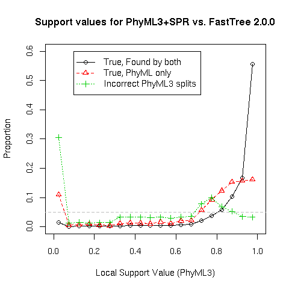

FastTree |
Also see Fast Tree-Comparison Tools |
FastTree infers approximately-maximum-likelihood phylogenetic trees from alignments of nucleotide or protein sequences. FastTree can handle alignments with up to a million of sequences in a reasonable amount of time and memory. For large alignments, FastTree is 100-1,000 times faster than PhyML 3.0 or RAxML 7. FastTree is open-source software -- you can download the code below.
FastTree is more accurate than PhyML 3 with default settings, and much more accurate than the distance-matrix methods that are traditionally used for large alignments. FastTree uses the Jukes-Cantor or generalized time-reversible (GTR) models of nucleotide evolution and the JTT (Jones-Taylor-Thornton 1992), WAG (Whelan & Goldman 2001), or LG (Le and Gascuel 2008) models of amino acid evolution. To account for the varying rates of evolution across sites, FastTree uses a single rate for each site (the "CAT" approximation). To quickly estimate the reliability of each split in the tree, FastTree computes local support values with the Shimodaira-Hasegawa test (these are the same as PhyML 3's "SH-like local supports").
More information:
These papers describe FastTree: the first paper describes FastTree 1.0, and the second paper describes heuristic minimum-evolution SPR moves, maximum-likelihood NNIs, and SH-like local supports. We have also eliminated the O(N2) steps in the neighbor-joining phase, and implemented maximum-likelihood NNI moves and SH-like supports (see the ChangeLog).
First, FastTree uses a heuristic variant of neighbor joining to get a rough topology. During neighbor joining, FastTree stores profiles of internal nodes instead of a distance matrix, which reduces the memory required. FastTree uses a combination of three heuristics to speed up this phase: it remembers the best join for each node, as in fast neighbor-joining; it does a hill-climbing search for better joins from a candidate join, as in relaxed neighbor joining; and it uses the "top hits" heuristic to avoid computing all pairwise distances and to avoid considering all possible joins at every step. It also updates the best join for a node as it comes across them, which reduces the amount of hill-climbing. Another limitation of FastTree's neighbor-joining phase is that it does not correct the distances for multiple substitutions, which exacerbates long-branch attraction. However, this will be corrected in the next stage.
FastTree then tries to reduce the length of the tree, using a mix of nearest-neighbor interchanges (NNIs) and subtree-prune-regraft moves (SPRs). These "balanced minimum-evolution" rearrangements are roughly the same as what FastME does, but because FastTree uses profiles instead of distances, it is much faster. By default, FastTree uses 4*log2(N) rounds of nearest-neighbor interchanges and 2 rounds of subtree-prune-regraft moves. In each round, it considers every possible NNI in the tree. Because there are too many (O(N2)) possible SPR moves, FastTree treats SPR moves as chains of NNIs and only extends the best choice in the chain for chains of length two or greater. In the minimum-evolution framework, if the distances are not too noisy, NNI and SPR moves suffice to reach optimal trees (Desper & Gascuel 2004, Bordewich et al. 2009).
Distances: During these minimum evolution steps, FastTree needs to estimate distances between sequences or profiles. For protein sequences, FastTree estimates distances by using the BLOSUM45 amino acid similarity matrix, and it corrects for multiple substitutions by using the formula -1.3 * log(1-d), where d is weighted so that random sequences have an average value of 1. For nucleotide sequences, FastTree uses the Jukes-Cantor distance -0.75*log(1 - 4/3 d), where d is the proportion of positions that differ. When comparing two sequences, positions with gaps are ignored; when comparing two profiles, positions are weighted by their proportions of non-gaps.
FastTree further improves the tree -- both the topology and the branch lengths -- with maximum-likelihood rearrangements. FastTree uses the Jukes-Cantor or generalized time-reversible models of nucleotide evolution or the JTT (Jones-Taylor-Thorton) or WAG (Whelan Goldman) models of amino acid evolution. By default, FastTree accounts for variable rates of evolution across sites by assigning each site to one of 20 categories, with the rates geometrically spaced from 0.05 to 20. FastTree sets each site to its most likely category by using a Bayesian approach with a gamma prior. This prevents overfitting on small alignments.
FastTree's search for a more likely topology is similar to RAxML's local hill-climbing, but FastTree is much faster because:
To quickly estimate the reliability of each split in the tree, FastTree uses the Shimodaira-Hasegawa test on the three alternate topologies (NNIs) around that split. Specifically, given a topology (A,B),(C,D), where A, B, C, D may be subtrees rather than leaves, FastTree uses the SH test to compare (A,B),(C,D) to alternate topologies (A,C),(B,D) or (A,D),(B,C). Although FastTree uses the CAT approximation and does not fully optimize the branch lengths, the resulting support values are virtually identical to PhyML 3's "SH-like local supports." Both FastTree and PhyML3 use 1,000 resamples and do not reoptimize the branch lengths for the resampled alignments.
If you want to use the traditional bootstrap instead, you can use phylip's SEQBOOT to generate resampled alignments, the -n option to FastTree to analyze all of the resampled alignments with one command, and CompareToBootstrap.pl to compare the original tree to the resampled trees. For alignments with thousands or tens of thousands of sequences, we recommend using the tree for the full alignment as the starting tree for each resampled replicate (the -intree1 option). This "fast global" bootstrap is quite fast and accurate -- for an alignment of 40,000 ABC transporters, 100 fast-global bootstraps took just 20 hours, and the resulting support values were strongly correlated with the traditional bootstrap (r=0.975). (Note -- this analysis was performed with FastTree 1.1, before we implemented maximum-likelihood NNIs.)
Earlier versions of FastTree used the local bootstrap and the minimum-evolution criterion to get a fast estimate of which splits in the tree are reliable. FastTree will still do this if you turn off the maximum-likelihood phase (-noml).
FastTree 2.1.11 is available as
gcc -O3 -finline-functions -funroll-loops -Wall -o FastTree FastTree.c -lm(gcc is installed on many Mac OS X and Unix machines. If you use a Mac, you may need to install it from xcode. gcc is also available for virtually every platform.) Note that FastTree will try to use SSE2/SSE3 instructions to speed up some inner loops. This will not work on many Windows or Mac machines. If FastTree will not run, then try compiling it with this command instead:
gcc -DNO_SSE -O3 -finline-functions -funroll-loops -Wall -o FastTree FastTree.c -lmWe have also heard that the -finline-functions option can cause an error. You can omit this option.
If you want to build the multi-threaded "FastTreeMP," use
gcc -DOPENMP -fopenmp -O3 -finline-functions -funroll-loops -Wall -o FastTreeMP FastTree.c -lm(The OpenMP version may not compile on some versions of Mac OS X unless you install a different version of gcc.) See here for more information about using FastTreeMP.
FastTree is open source software -- you are free to modify and redistribute it as you wish. If you do make any improvements to FastTree, please send them to us so we can incorporate your changes into the main version.
Versions:
These trees are based on the GreenGenes collection of full-length 16S ribosomal RNAs, curated by Phil Hugenholtz. To eliminate chimeras, Phil and I use a "two-study filter" -- the rough idea is that a putative genus is reliable if it has been witnessed by two different studies or if it has been isolated in pure culture. Specifically, I generate a minimum-evolution tree using all sequences, and identify clusters that have diverged by at most 3% from the ancestor. Sequences are kept only if they belong to a cluster that contains sequences from two different studies, or if they are named isolates. Also, any sequences that contain over 1% ambiguous characters are considered to be low quality and are removed.
To align these sequences, I used either the GreenGenes NAST alignment, trimmed with the GreenGenes mask, or Infernal. Infernal has separate bacterial and archaeal models -- ideally bacterial and archaeal sequences would be aligned to their respective models and then the alignments would be merged. Eric Nawrocki provided this for one set of sequences. Other Infernal alignments were made with the bacterial model for all sequences, and archaeal parts of these trees should be viewed skeptically.
Some of the older NAST alignments include a few eukaryotic sequences (with non-numeric ids) to help root the tree. Other trees are rooted on the bacterial/archaeal split. Also, some of the trees were run with constraints provided by Phil Hugenholtz. Both the NAST and Infernal alignments are trimmed -- you can get the full-length sequences from GreenGenes. Note that all alignments were compressed with gzip.
| Sequences | # Distinct | Aligned by | FastTree version and settings | Download |
| 331,550 (2-study filter, 3%) | 274,386 | NAST | 2.1.1 -spr 4 -gamma -fastest -no2nd (ML) | alignment and tree |
| 331,550 (2-study filter, 3%) | 276,115 | Infernal (bac) | 2.1.1 -spr 4 -gamma -fastest -no2nd (ML) | alignment and tree |
| 399,817 (all) | 337,018 | NAST | 2.1.1 -noboot -noml -fastest (no ML) | alignment and tree |
| 275,009 (all) | 237,882 | NAST | 1.9.0 (ML) with constraints (weight 100) | alignment and tree |
| 274,879 (all) | 208,279 | Infernal (both) | 1.9.0 (ML) with constraints (weight 100) | alignment and tree |
| 275,009 (all) | 237,882 | NAST | 1.9.0 -fastest (ML) | alignment and tree |
| 274,879 (all) | 208,279 | Infernal (both) | 1.1 (no ML) with constraints | alignment and tree |
| 218,348 (all) | 186,743 | NAST | 1.0 (no SPR moves, no ML) | alignment and tree (48 MB) |
To infer a tree for a protein alignment with the JTT+CAT model, use
FastTree < alignment_file > tree_fileor
FastTree alignment.file > tree_file
Use the -wag or -lg options to use the WAG+CAT or LG+CAT model instead. You can also use your own transition matrix
To infer a tree for a nucleotide alignment with the GTR+CAT model, use
FastTree -gtr -nt < alignment.file > tree_fileor
FastTree -gtr -nt alignment_file > tree_fileIf you do not specify -gtr, then FastTree will use the Jukes-Cantor + CAT model instead.
Use the -gamma option (about 5% slower) if you want to rescale the branch lengths and compute a Gamma20-based likelihood. Gamma likelihoods are more comparable across runs. These also allow for statistical comparisons of the likelihood of different topologies if you use the -log logfile option (see details). The change in the scale of the tree is usually modest (10% or less).
If you are using Windows, run FastTree within the command-line environment (use Start / Run / "cmd"). If you are using MacOS or Linux, you may need to specify the path of the executable by using "./FastTree" rather than "FastTree".
To see what version of FastTree you have and for information on FastTree's options, run FastTree without any arguments or with the -help option.
Input formats: FastTree reads multiple sequence alignments in fasta format or in interleaved phylip format.
Output formats: FastTree outputs trees in Newick format. The placement of the root is not biologically meaningful. The local support values are given as names for the internal nodes, and range from 0 to 1, not from 0 to 100 or 0 to 1,000. If all sequences are unique, then the tree will be fully resolved (the root will have three children and other internal nodes will have two children). If there are multiple sequences that are identical to each other, then there will be a multifurcation. Also, there are no support values for the parent nodes of redundant sequences.
There are many graphical tools for viewing phylogenetic trees that accept Newick format. For viewing small trees and for making figures, I use MEGA. For viewing larger trees, I use Archaeopteryx. For viewing huge 16S trees I also use Arb.
| FastTree 2.0.0 | RAxML | PhyML 3 | |||||
| Alignment | # Distinct Sequences | #Positions | Settings | Hours | Memory (GB) | Hours | Hours |
| Efflux permeases (COG2814) | 8,362 | 394 a.a. | JTT+CAT | 0.25 | 0.35 | >1,200 | >1,200 |
| ABC transporters (PF00005) | 39,092 | 214 a.a. | JTT+CAT | 1.0 | 0.96 | -- | -- |
| 16S ribosomal RNAs, distinct families | 15,011 | 1,287 nt. | GTR+CAT | 0.66 | 0.56 | 99 | >360 |
| 16S ribosomal RNAs, distinct families | 15,011 | 1,287 nt. | JC+CAT | 0.49 | 0.36 | -- | -- |
| 16S ribosomal RNAs | 237,882 | 1,287 nt. | JC+CAT, -fastest | 21.8 | 5.8 | -- | -- |
All of the timings are on a single CPU. The FastTree times include the SH-like local support values. For huge alignments, FastTree 2.1 with -fastest is about twice as fast as 2.0, and the multi-threaded version is up to four times faster (e.g., 5.6 hours for 237,882 16S rRNAs on 3 CPUs). For the COG2814 alignment I ran RAxML 6 with the fast hill-climbing option (not RAxML 7), and I ran PhyML was run with the fastest settings (no variation in rates across sites and no SPR moves).
In theory, FastTree takes O(N L a + N1.5) space and O(N1.5 log(N) L a) time, where N is the number of unique sequences, L is the width of the alignment, and a is the size of the alphabet. With -fastest, the theoretical space reduces to O(N L a + N1.25) space and the time reduces to O(N1.25 L a). The space and time complexity are dominated by initializing the top-hits lists and maintaining them during the neighbor-joining phase. The minimum-evoution NNIs and SPRs take O(N L a) time per round, or O(N log(N) L a) time total (with default settings). The maximum-likelihood NNIs take O(N L a2) time per round, or O(N log(N) L a2) time total, and O(N L a) space. Similarly, the local supports take O(N L a2) time and O(N L a ) space. In practice, the maximum likelihood NNIs are usually the slowest step.
FastTree is slightly more accurate than PhyML3 with NNI moves because it has a better starting tree (thanks to the minimum-evolution SPR moves). FastTree is much more accurate than minimum-evolution methods such as neighbor joining, BIONJ or FastME. FastTree is not as accurate as maximum-likelihood methods that do a more intensive search of topology space, such as PhyML with SPR moves or RAxML. However, for large alignments, the more accurate methods are orders-of-magnitude slower than FastTree, and most of the splits that are found by these methods but missed by FastTree have poor support.
| #Sequences | 250 | 1,250 | 5,000 | 78,132 |
| Type | a.a. | a.a | a.a. | nt |
| RAxML 7 (JTTCAT + SPRs) | 90.5% | 88.4% | 88.4% | -- |
| PhyML 3.0 (Γ4 + SPRs) | 89.9% | -- | -- | -- |
| FastTree 2.0.0 (JTT+CAT or JC+CAT) | 86.9% | 83.7% | 84.3% | 92.1% |
| PhyML 3.0 (Γ4, no SPR) | 86.0% | -- | -- | -- |
| PhyML 3.0 (no gamma, no SPR) | 81.7% | 80.1% | -- | -- |
| FastME 1.1 (log-corrected distances) | 79.6% | 77.7% | 75.3% | -- |
| BIONJ (max-lik. distances) | 77.7% | 73.7% | 73.1% | -- |
| Parsimony (RAxML) | 76.8% | 76.5% | 69.4% | -- |
| BIONJ (log-corrected distances) | 76.6% | 73.0% | 72.3% | -- |
| Neighbor-joining (log-corrected distances) | 76.0% | 72.6% | 71.6% | 66.1% |
| Clearcut 1.0.8 (log-corrected distances) | 75.5% | 72.3% | 71.5% | 58.1% |
Technical details: Topological accuracy is the percentage of splits in the true trees that were present in the inferred trees. The protein simulations are described in the MBE paper and include rate variation across sites and realistic gaps. The nucleotide simulations were based on a large 16S tree and were produced similarly. Large neighbor-joining trees were computed with NINJA. Maximum-likelihood distances were computed with phylip's protdist. Log-corrected distances were computed with FastTree's -makematrix option. For smaller simulations we used RAxML 7.0.4. For the 5,000 protein simulations, which are near the limit of feasibility for RAxML, we used RAxML 7.2.1 with the -D option to terminate ML search if the topology changes by less 1%; these still took an average of 70.3 hours each, while FastTree took an average of 0.17 hours.
For the simulated alignments with 250 protein sequences, we show local support values for the splits inferred by PhyML 3.0 (Γ4 + SPRs). The support values are the minimum of SH-like and approximate likelihood ratio test supports. The right-most bin includes the strongly supported splits (0.95 to 1.0). Only 16% of the splits that are found by PhyML but missed by FastTree have strong support.
| Method | Average log-likelihood |
| RAxML 7.0.4GTR+Γ4 | -168,104 |
| FastTree 2.0.0 GTR+CAT | -168,577 |
| PhyML3 GTR+Γ4 | -168,603 |
| PhyML3 HKY+Γ4 | -168,607 |
| FastTree 2.0.0 JC+CAT | -168,637 |
| PhyML3 JC+Γ4 | -168,702 |
Technical details: To do a fair comparison of tree topologies, branch lengths were reoptimized with RAxML and the GTR+Γ4 model. PhyML was run with default settings (no SPR moves). The 16S alignment was taken from GreenGenes. The individual alignments of 500 sequences are available here.
| Method | Average log-likelihood |
| RAxML 7.0.4 JTT+Γ4 | -206,724 |
| FastTree 2.0.0 JTT+CAT | -206,993 |
| PhyML3 JTT+Γ4 | -207,156 |
Technical details: To do a fair comparison of tree topologies, branch lengths were reoptimized with RAxML and the JTT+Γ4 model. PhyML was run with default settings (no SPR moves). The COG alignments are described in the MBE paper and are available here.
Each link will download a tar-ball with the files that were used to run ROSE (*.sim.rose), the simulated alignment (*.sim.p), and the true topology (*.sim.trim.tree or, for the nucleotide simulations, *.sim.tree). Save it into an empty directory and run tar xzf on it to get the files. All simulations are based on trees from profile alignments of biological sequences and include variable rates across sites. The amino acid simulations are described in more detail in the MBE paper. The nucleotide simulations were produced similarly, but were based on a FastTree 1.9.0 maximum-likelihood 16S tree (using sequences that are unique to 99%). Internal branch lengths were truncated to be no less than 0.001 (corresponding to roughly 1 substitution along the internal branch). To make such short branch lengths with Rose, I scaled the branch lengths by 1,000x (not 100x) and set MeanSubstitution = 0.00134.
FastTreeMP uses OpenMP to parallelize many of the steps in computing a tree. (Thanks to Jim Hester for introducing me to OpenMP and contributing code.) FastTreeMP with 3 CPUs is typically 1.5-1.7x faster than the single-threaded version of FastTree. More than 3 CPUs will give additional speed-ups to the neighbor-joining phase but will not speed up the maximum-likelihood phase. In principle, FastTreeMP should work just as well on Windows as it does on Unix, but I have not built or tested either OpenMP or SSE3 on Windows; see compilation instructions if you want to try.
As of version 2.1, FastTreeMP will not give exactly the same results as FastTree because the top-hits heuristics become non-deterministic (depending on which seed is reached first) and because the star topology test is turned off. However, in practice, the results are of the same quality.
If you don't want FastTreeMP to use all of the cores on your machine, you can use the OMP_NUM_THREADS environment variable to control its behavior (e.g., in a Unix shell, use export OMP_NUM_THREADS=3). If you run FastTreeMP -help, it will tell you how many threads it will use.
Technical details: These are the steps that are parallelized:
The most important steps that are not parallelized are the minimum-evolution NNIs and SPRs. Also, the fine-grained nature of the parallelization of the ML code limits the speedup. It would be better to cut the tree at various splits (that would temporarily be held fixed) and then do independent tree computations on each piece. If you are interested in working on this, please let me know.
If you use the -gamma option, FastTree will report the likelihood under the discrete gamma model with 20 rate categories ("Gamma20"). (The discrete gamma distribution is a standard approximation for accounting for the different rates of evolution at different sites and for uncertainty in these rates, see the original paper by Yang.) More precisely, after optimizing the tree with a fixed rate for each site (the CAT model), FastTree will rescale the tree to optimize the Gamma20 likelihood. FastTree's Gamma20 likelihoods are quite accurate (see below), and are over 100 times faster than optimizing branch lengths under Gamma4 with other tools. The -gamma option only slows FastTree down by around 5%. FastTree can also report per-site likelihoods for statistical tests, e.g. for use with CONSEL.
FastTree's Gamma20 likelihoods are more comparable across runs than its CAT likelihoods, and for large alignments they are more accurate than the standard Gamma4 approximation with reoptimized branch lengths. For example, on COG protein alignments with 500 sequences, if we take the JTT+Gamma20 likelihood (from PhyML with reoptimized branch lengths) as the gold standard, and we estimate the difference in likelihoods between RAxML's and FastTree's topology with various tools, then the root mean square error is 19.0 for FastTree's CAT20, 17.3 for RAxML's Gamma4, and just 7.0 for FastTree's Gamma20.
For nucleotide alignments with the GTR (generalized time-reversible) model, FastTree's likelihoods are not as accurate because it does not fully optimize the rate parameters. Still, they are about as accurate as Gamma4 with fully optimized GTR parameters. With 50 16S rRNA sequences, using Gamma20+GTR (from PhyML with reoptimized branch lengths) as the gold standard, the root mean square error in the difference in likelihoods between RAxML's and FastTree's topology is 0.93 for FastTree's GTR+Gamma20 and 0.64 for RAxML's GTR+Gamma4.
Gamma likelihoods are always lower than CAT likelihoods because they account for the possibility that each site's rate could have been something else. However, because FastTree relies on the CAT-based branch lengths to compute the Gamma20 likelihood, we do not recommend relying on either FastTree's CAT or Gamma20 likelihoods for small alignments of much less than 50 sequences. For such small alignments, there could be greater uncertainty as to the evolutionary rate of a site, which could lead to significant errors in the CAT-based branch lengths that FastTree uses to compute the Gamma20 likelihood. Also note that FastTree's gamma likelihoods may not be precisely comparable to Gamma4 likelihood estimates from other tools.
Technical details: To quickly compute the Gamma20 likelihood, FastTree first computes all the site likelihoods for each of 20 different relative rates, ranging from 0.05 to 20. To obtain the shape and scale parameters and the likelihood, FastTree alternately optimizes the shape parameter and the scale to maximize the likelihood, using Brent's method. The optimization uses only the site likelihoods, and does not require any per-node or per-sequence computations.
Given the site likelihoods, a shape (alpha) parameter, and a scale parameter, FastTree can approximate the likelihood of each site by summing P(data | rate) * P(rate | shape & scale) over the 20 relative rates. In most tools, the scale parameter is set so that the average of the gamma distribution is 1, but FastTree allows the average relative rate to vary. FastTree does this because branch lengths inferred under the CAT approximation tend to be nearly linear with the Gamma20 lengths but can be off by a constant factor. Also, in most tools, the discrete relative rates are chosen to have equal probabilities. FastTree instead uses fixed discrete rates, and estimates a discrete probability for each rate. FastTree uses the area under the continuous gamma distribution between two midpoints: P(ratei | shape & scale) = integral of the gamma distribution with the given shape parameter and a mean of 1 from scale*(ratei-1 + ratei)/2 to scale*(ratei + ratei+1)/2.
You can use the -trans option to read the transition matrix from a file. This option is only supported for amino acid aligments and it only affects the maximum-likelihood phase of FastTree. (You can use the -matrix or -nomatrix options to modify the minimum-evolution phase of FastTree.)
The transition matrix file must be tab-delimited, with the columns A R N D C Q E G H I L K M F P S T W Y V * (in that order). Each entry gives the rate at which one amino acid changes to another. The last column ("*") should have the stationary distribution. Each row must have the row's name as its first field (in order, A R N ... V). An example file (for the WAG model) is here.
The transition matrix Q and the stationary distribution π should satisfy:
Note that the transition matrix is usually not symmetric.
Use of a highly biased transition matrix can lead to numerical problems for single-precision FastTree. So for custom transition matrices, we recommend using the double-precision version of FastTree (compiled with -DUSE_DOUBLE).
Yes. If you do not have a multiple sequence alignment, we recommend using MUSCLE to create one and gblocks to "trim" it (remove low-confidence parts of the alignment, such as positions that contain many gaps). Alternatively, for large protein families, we recommend hmmalign from the HMMer package. If using hmmalign, you should remove columns that do not match the model (usually output in lower case). For large RNA families we recommend Infernal.
FastTree only handles two alphabets. Its nucleotide alphabet is ACGT, where T can also be represented as U (but not lower-case u). Its amino acid alphabet includes the 20 standard amino acids (ARNDCQEGHILKMFPSTWYV). FastTree also expects the alignment to contain missing data or gaps, represented as "-" characters. FastTree treats any other characters as missing data, and issues a warning. Thus, FastTree will report warnings for alignments that contain ambiguous 1-letter codes (R or N for nucleotides or Z or X for amino acids) or rare amino acids (e.g. U for selenocysteine).
By default, the maximum-likelihood phase of FastTree does not allow branch lengths of less than 0.0005, so unresolvable internal branches often end up with lengths of about 0.0005. (Before FastTree 2.1.7, the limit was 0.0001, so if you are using an older version, you may see many branch lengths of 0.0001 instead.)
If you need to resolve very-short branch lengths accurately, you can use a double-precision version of FastTree. To do this, you need to compile it with -DUSE_DOUBLE and you need to use version 2.1.8 or later, e.g.
gcc -DUSE_DOUBLE -O3 -finline-functions -funroll-loops -Wall -o FastTree FastTree.c -lm
If you run FastTree with -noml, then the minimum-evolution phase of FastTree may return branch lengths that are slightly less than zero. You can think of these negative branch lengths as noisy estimates of the actual branch length, which is presumably near zero. A negative branch length also usually implies a lack of confidence in the adjoining split.
FastTree's default settings should be fast enough for most uses. However, if you are concerned about performance, then you can:
The -fastest option turns off local hill-climbing search during neighbor-joining and uses the top-hits heuristic more aggressively. For an alignment of 237,000 16S rRNAs, this speeds up the top-hits and neighbor-joining phases by around four-fold, with little effect on tree quality as estimated by total tree length or log likelihood. Similarly, on the 16S-like simulations with ~78,000 sequences, -fastest does not have any effect on accuracy (as long as you include NNIs and SPRs afterwards). You can also use -fastest -no2nd for an intermediate level of speed and intensiveness of search during neighbor-joining.
On the 78K-sequence 16S-like simulations, reducing the rounds of ML NNIs to just 4 (-mlnni 4) has a negligible effect on accuracy. In total, the ML NNIs only improve accuracy from 91.4% to 92.1%. If you use the -mlnni option, you can still refine the topology later with -intree.
You can also try to reduce the size of your alignment. FastTree's running time scales roughly linearly with the number of positions in the alignment. If there are many columns that are mostly gaps, you can speed up FastTree by removing them. Furthermore, the largest alignments usually have many nearly-identical sequences, so you might want to use a fast clustering method such as uclust or PartTree to reduce your data set.
Here is the breakdown of how long the various stages of FastTree 2.0.0 take, with the -fastest option, on 237,882 distinct 16S sequences with the Jukes-Cantor + CAT model, along with the theoretical scaling (N for number of sequences, L for the length of alignment, and a for alphabet size).
| Stage | Cumulative Time (hr) | Time for this Stage (hr) | Theoretical Time |
| Top hits for sequences | 2.1 | 2.1 | O(N1.5 L) |
| Neighbor-Joining | 10.8 | 8.7 | O(N1.5 L a) |
| Min. evo. NNIs, 58 rounds (with subtree skipping) | -- | 0.2 | O(N log(N) L a) |
| Min. evo. SPRs, 2 rounds | 12.2 | 1.2 | O(N L a) |
| ML lengths (1 round) | 12.7 | 0.4 | O(N L a2) |
| ML NNIs, 1st round | 15.1 | 2.5 | O(N L a2) |
| Selecting per-site rates | 15.5 | 0.4 | O(N L a2) |
| ML NNIs, 2nd round | 16.4 | 0.8 | O(N L a2) |
| ML NNIs, rounds 3-26 (with subtree skipping and star tests) | 19.4 | 3.0 | O(N log(N) L a2) |
| ML NNIs, 27th round (no subtree skipping or star tests for last round) | 20.3 | 1.0 | O(N L a2) |
| ML lengths (1 round) | 20.6 | 0.3 | O(N L a2) |
| SH-like local supports | 21.8 | 1.2 | O(N L a2) |
In the single-threaded version of FastTree 2.1.0, the timings are about the same, except that the neighbor-joining phase finishes after 4.7 hours instead of 8.7 hours. With the multi-threaded version and 3 CPUs, the entire computation takes just 5.6 hours.
The ME NNIs converged in 58 rounds, a bit less than the limit of 4*log2(N) = 71 rounds, and the ML NNIs converged in 26 rounds, a bit less than the limit of 2*log2(N) = 36 rounds, but more ML NNIs were found in the last "slow" round with the heuristics mostly turned off. Note that the the maximum-likelihood NNIs are over 10 times slower per round than the minimum-evolution NNIs. Also, the 1st, 2nd, and last rounds of ML NNIs are particularly slow.
FastTree's default settings give good accuracy in a reasonable amount of time. You may get slight increases in accuracy by changing these settings:
Use the -gamma option to have FastTree report the Gamma20 likelihood, that is, the likelihood with the discrete gamma distribution and 20 rate categories. Or, use the -intree option with -gamma -nome -mllen to have FastTree reoptimize the branch lengths and report the Gamma20 likelihood for a fixed topology. These likelihoods should be comparable across runs.
If you use both the -log and -gamma options, FastTree will report per-site likelihoods in a log file. (It will also report the per-site likelihood for each rate category.) You can use a perl script, GammaLogToPaup.pl, on two or more of these log files to reformat this information for use with CONSEL, which can perform the Shimodaira-Hasegawa (SH) test and the approximately unbiased (AU) test to determine if one topology is significantly better than other topologies. For example, these commands will compare two topologies for a nucleotide alignment under the GTR+Gamma20 model:
./FastTree -gamma -nt -gtr -nome -mllen -intree topology1 -log topology1.log alignment.p > topology1.ftlen ./FastTree -gamma -nt -gtr -nome -mllen -intree topology2 -log topology2.log alignment.p > topology2.ftlen perl GammaLogToPaup.pl topology1.log topology2.log > top12.txt makermt --paup top12.txt consel top12 catpv top12.pvwhere makermt, consel, and catpv are from the CONSEL package.
Warning -- Be careful with the -log option. If you omit the log file's name from the above FastTree commands, FastTree will think that the next argument, namely alignment.p, is your log file, and your alignment will be overwritten!
The single-threaded version of FastTree is deterministic and rerunning the same version of FastTree on the same alignment on the same computer with the same settings should give identical results. There can be differences in results across platforms due to numerical issues, but the resulting trees should have nearly identical likelihoods. The local-bootstrap support values are derived using a random number generator and will vary from run to run if you modify the seed.
FastTreeMP may not be entirely deterministic. It is theoretically possible for changes in the order that threads are executed to affect heuristic search during the neighor-joining phase. This is unlikely to affect the quality of the final tree but there may be subtle differences.
FastTree is optimized for very alignments with very large numbers of sequences, not for very wide alignments. By default, FastTree uses 1,000 resamples to estimate the support for each split, and it uses 4 * 1,000 * L bytes of memory for this. That comes to 4 GB of RAM per million positions. You can eliminate the support value computation with the -nosupport option, as the support values are probably meaningless for such wide alignments. (Every split will probably have 100% support, but this does not indicate that the splits are correct, because FastTree assumes that there is no recombination between lineages, which is very unlikely to be true for such wide alignments.) You could also reduce the memory requirement 10-fold by using 100 resamples instead of 1,000 resamples (the -boot 100 option).
Even without resamples, FastTree requires around 21 * N * L bytes of memory for large nucleotide alignments if you use the generalized time-reversible model (-gtr). (For large amino acid alignments, the memory requirement is around 85 * N * L. For alignments with many sequences, there is an additional memory requirement during the neighbor joining phase of around 16 * N1.5 bytes with default settings or 24 * N1.25 bytes if using -fastest.) For genome-wide nucleotide alignments, memory usage will usually be a bit less than 21 * N * L with minimum-evolution FastTree (-noml option) or with the Jukes-Cantor model (the default) . For closely-related sequences (maximum divergence of less than 10%), you could also remove the invariant positions and use minimum-evolution FastTree with no correction for multiple substitutions (-rawdist). In theory this should work well but I have not tested it. However, if you want a maximum-likelihood tree, you *cannot* remove the invariant positions.
FastTree was developed by Morgan N. Price in Adam Arkin's group at Lawrence Berkeley National Lab. If you have questions, please email fasttree@microbesonline.org.
{kind=link}